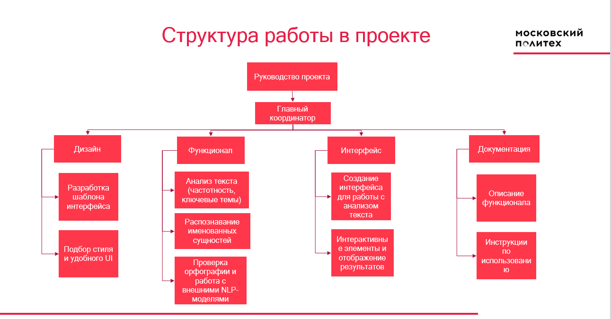

Описание
BindWord XP — это кроссплатформенное приложение для NLP-анализа текстов. Оно позволяет загружать документы в форматах PDF, DOCX, TXT и автоматически выполнять анализ:
- Статистика текста: количество слов, ошибок, ключевые идеи
- Частотный анализ слов и облако тегов
- NER — распознавание именованных сущностей
- Тематический анализ документа
- Экспорт результатов в различные форматы
- Интеграция с AI-помощником DeepSeek
Проект разрабатывается в рамках дисциплины "Проектная деятельность" Московского Политехнического университета.
Куратор проекта: Самелик Юрий Леонидович.
Проблематика проекта
Многие люди при работе с большим объемом информации сталкиваются со снижением продуктивности и риском ошибок из-за ручного анализа, который занимает много времени. Отсутствие программного обеспечения для анализа больших объемов текстовых данных создает значительные трудности для пользователей.
Цель проекта
Разработать и выпустить многоплатформенное программу с графическим интерфейсом для NLP-анализа текстовых данных, основанное на Python/Spacy скрипте, и возможностью обработки текста.
Задачи
- Определение необходимого функционала.
- Написание графического интерфейса.
- Оптимизация кода.
- Дополнение функционала.
- Тестирование и публикация бинарных файлов и исходного кода
